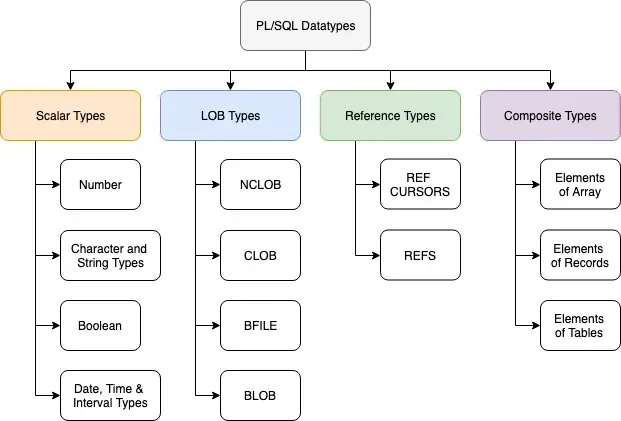

PL/SQL Datatypes
Data Types in PL/SQL are used to define how the data will be stored, handled, and treated by Oracle during the data storage and processing. Data types are associated with the specific storage format and range constraints. In Oracle, each value or constant is assigned with a data type.

- Scalar Types: These are basic datatypes which generally holds a single value like a number or a string of characters. Scalar types have 4 different categories which are listed in the diagram above, namely Number Types, Character and String, Boolean Types and Date and Time etc.
- LOB Types: This datatype deals with large objects and is used to specify location of these large objects like text files, images etc which are generally not stored outside the database.
- Reference Types: This datatype is used to hold pointer values which generally stores address of other program items.
- Composite Types: Last but not the least, as the name suggests this type of data is a composition of individual data which can be manipulated/processed separatel as well.
NUMBER(p,s)
Range: p= 1 to 38 s= -84 to 127
This datatype is used to store numeric data. Here, p is precision s is scale.
CHAR(size)
Range:1 to 2000 bytes
This datatype is used to store alphabetical string of fixed length.
Its value is quoted in single quotes.
VARCHAR(size)
Range: 1 to 2000 bytes
This datatype is used to store alphanumeric string of variable length.
Its value is quoted in single quotes.
VARCHAR2(size)
Range:1 to 4000 bytes
This datatype is used to store alphanumeric string of variable length.
Its value is quoted in single quotes.
DATE
Range:01-Jan-4712 BC to 31-DEC-9999
It stores the data in date format DD-MON-YYYY
The value for this datatype is written in single quotes.
BOOLEAN
This datatype is used in conditional statements.
It stores logical values.
It can be either TRUE or FALSE